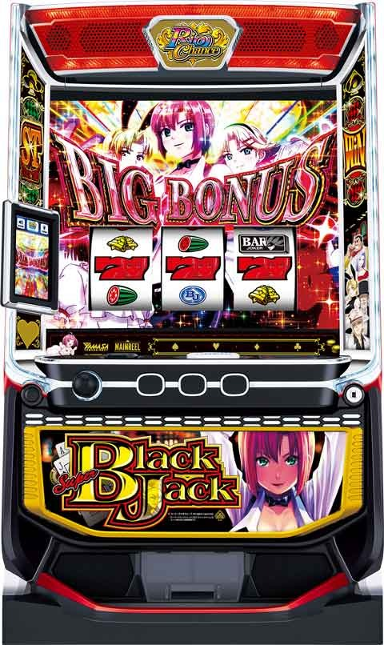
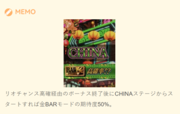
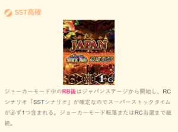
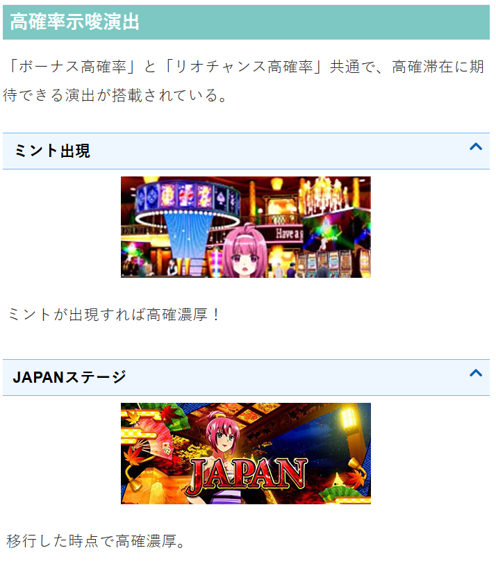
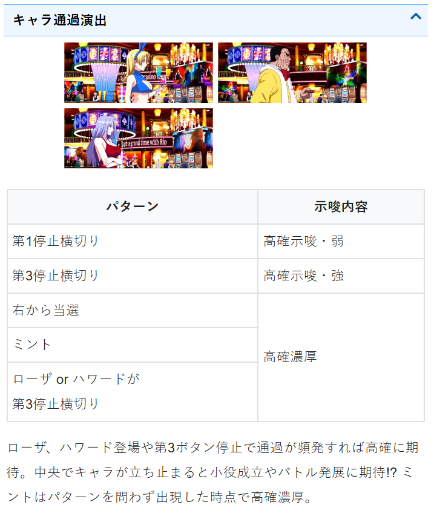
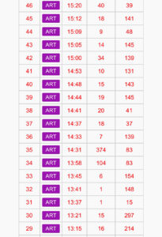
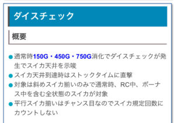
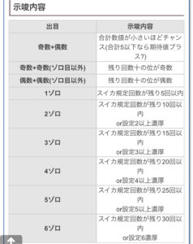
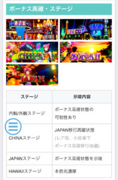
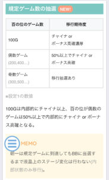

Lスーパーブラックジャック

【天井情報】
999G+α BIGボーナス
設定変更時 666G+αに短縮
※初当たりBB後のリオチャンススルー時も天井短縮
※RB後は天井G数を引き継ぐ スルー天井
RB4連続で次回BIGボーナス確定 スイカが天井回数到達でストックタイム直撃。詳細は不明。
【リセット判別】
山佐のためガックンあり？
【有利区間について】
有利区間リセット時はジョーカーモード濃厚
有利区間切れ条件 不明
狙い目
【リセット狙い】
320Gから
【ビッグ間天井狙い】
※ビッグ間ハマりはサブ液晶G数
620Gから
初当たりBIGのリオチャンススルー後(天井短縮) 250Gから
【スルー天井狙い】
REG4連続以上 BIGまで
※リオチャンス中のREGはスルー回数に含まない
サブ液晶赤色(次回BB当選) BIGまで
【スイカ天井狙い】
ダイスチェック「1・1」が出た台はスイカ天井のストックタイム当選まで
【ステージ狙い】
JAPANステージは抜けるまで
【連チャン後即やめ台狙い】
①狙い目 以下の2つの条件を満たす台
・連チャン後30-50G前後やめの台
・連チャン中にREGを３回以上引いている台（連チャン中REGはBIG表記で獲得枚数30-50枚）
②打ち方
・100G前後または70-80Gくらいまで回す
連チャン中にREGを３回以上引いていると金BARモード以上、またはジョーカーモードに移行している。
この場合は、リオチャンス高確率がロング継続している事があるため、
30Gを過ぎても100G前後まで回す価値がありそう。
または70-80Gまで回して高確示唆が弱ければやめ、高確示唆強めで100G前後までみたいな立ち回りが良いかも？


【有利区間差枚狙い】
差枚+1500枚以上だと次の初当たりで有利切れのチャンスあるが、ジョーカーモードの履歴がはっきりしないため狙いにくそう。
差枚が-1000枚以下だと少し優遇がありそう。20Gくらいボーダー下げれる。
やめ時
BIG後はリオチャンス高確のため40Gくらい回してやめ。（リオチャンス高確は保障30G+α）
連チャン中にREG３回以上またはジョーカーモード突入した場合は100G前後様子見た方が良さそう？
高確示唆弱ければ50-60G回してやめ？
筐体左上のジョーカーランプ点灯していたらジョーカーモード滞在濃厚
REG後は天井リセットされないため天井狙い時は続行。（BIG間ハマリは液晶G数）
その他
【高確示唆】


【獲得枚数から予想されるボーナス】
・通常時REG(REGの信号あがる)
目安49〜58枚 主に51枚
・通常時赤BIG(ATやARTの信号あがる)
目安80〜91枚 主に83枚
・通常時青BIG(ATやARTの信号あがる)
目安222〜228枚 主に225枚
・連チャン時REG（ATやARTの信号があがる）
目安30～50枚
【初当たりBIGのリオチャンススルー後】
リオチャンス当選するとボーナス確定のため通常時BIG当選単発後の台が天井短縮と思われる。
画像のデータだと13:58のBIGがリオチャンススルー後と思われる。

ダイスチェック


ステージ

規定ゲーム

・スロプラネクストを登録しておくとスイカの回数をカウントしてくれる。
参考元
基本情報
- メーカー: セブンリーグ
- 機械割: 97.8% 〜 112.7%
- 導入開始日: 2025年02月03日（月）
- ゲーム性概要: ●リオチャンス・ボーナス・ストックタイムをループさせるゲーム性 ●通常時のBIG終了後はリオチャンス高確率へ ●リオチャンスはボーナスの種類を自力で昇格させる ●ボーナス中は（スーパー）ストックタイムを抽選


打ち方
打ち方・小役
打ち方（小役狙い）
「最初に狙う絵柄」

左リール上段付近にBARを狙う。左リールは青7や赤7を狙ってもチェリーとスイカを引き込めるので、リオチャンス高確中のアツい演出発生時などは、青7や赤7を狙っていつもと違うリーチ目を出すのもオススメだ。
「チェリー停止時」 成立役…チェリーorチャンス目

「BAR下段停止時」 成立役…ハズレorベルorリプレイorチャンスベルorチャンス目

「スイカ停止時」 成立役…スイカorチャンス目

中リールBAR or赤7を目安にスイカを目押し。右リールはこぼしがないのでフリー打ちでOK。
「レア役の停止形」

3連チェリーやスイカの平行揃いはチャンス目。
※数値等は独自調査値です
変則押しはNG

通常時、押し順ナビなし時は左リール第1停止での消化を推奨する。
※数値等は独自調査値です
ピンチ目
ボーナス高確・CHINA・リオチャンス高確A・ジョーカーモードからの転落時は必ずピンチ目を経由する。 ピンチ目は左リール青7狙いをしていれば判別可能なので、各種高確中は青7狙いをオススメしたい。
「ピンチ目」 ピンチ目が出現しない限り、各種高確から転落する可能性はない。

※ピンチ目＝必ず転落ではない ※RC高確A中はピンチ目でもリオチャンスを抽選（リオチャンス非当選時に転落を抽選）
※数値等は独自調査値です
リーチ目／出目法則
リーチ目（一部）
「左リールBAR狙い時」

「左リール赤7狙い時」

「左リール青7狙い時」

※数値等は独自調査値です
解析情報通常時
小役関連
レア役確率（設定1）
| 役 | 確率 |
|---|---|
| チェリー | 1/75.0 |
| スイカ | 1/99.9 |
| チャンス目 | 1/99.9 |
| レア役合算 | 1/30.0 |
スイカ確率
※数値等は独自調査値です
［通常中］成立役ごとの抽選値（設定1）
| 役 | CHINA移行 | ボーナス高確移行 | ボーナス直撃 |
|---|---|---|---|
| チャンス目 | ー | 40.1% | 5.1% |
| チェリー | 39.8% | ー | ー |
| スイカ | ー | ー | ー |
| チャンスベル | 50.0% | ー | ー |
| 小役3連 | ー | 3.5% | ー |
| 小役4連以上 | ー | 20.3% | ー |
※スイカは別途、滞在状態不問でストックタイム直撃抽選もおこなう
［CHINA中］成立役ごとの抽選値（設定1）
| 役 | CHINA移行 | ボーナス高確移行 | ボーナス直撃 |
|---|---|---|---|
| チャンス目 | ー | 100% | 5.1% |
| チェリー | ー | 15.2% | ー |
| スイカ | ー | 15.2% | ー |
| チャンスベル | CHINA滞在10G保証を加算 | ||
| 小役3連 | ー | 10.2% | ー |
| 小役4連以上 | ー | 39.8% | ー |
※スイカは別途、滞在状態不問でストックタイム直撃抽選もおこなう
［ボーナス高確中］ボーナス直撃当選率
| 役 | 当選率 |
|---|---|
| 下記以外 | 約1%～1.6% （設定1～6） |
| 小役3連 | 約1% |
| 小役4連以上 | 約22% |
| チェリー | 約20% |
| スイカ | 約20% |
| チャンス目 | 約67% |
ボーナス高確中の小役4連以上の抽選以外は調査中。
※数値等は独自調査値です
ストックタイム直撃抽選
通常時（内部状態不問）のスイカ成立時は、ストックタイムの直撃を抽選。この抽選でストックタイムに当選した場合、スイカ天井までのスイカ規定回数はリセットされない。
スイカのストックタイム直撃当選率
※数値等は独自調査値です
内部状態関連
ボーナス高確
通常時は小役やゲーム数消化で内部状態をボーナス高確に上げてボーナスを目指すゲーム性で、CHINAステージはボーナス高確準備的な存在。 ボーナス高確中は全役でボーナス抽選がおこなわれ、移行時のボーナス当選期待度は約50%（設定1）だ。
ボーナス高確への移行契機
| No. | 契機 |
|---|---|
| 1 | レア役（おもにチャンス目）での抽選 |
| 2 | 小役連での抽選（3連から抽選、4連は大チャンス） |
| 3 | 100G消化ごとの抽選 |
ボーナス高確移行確率
| 設定 | 確率 |
|---|---|
| 1 | 1/114.7 |
| 2 | 1/112.5 |
| 3 | 1/110.5 |
| 4 | 1/96.4 |
| 5 | 1/92.0 |
| 6 | 1/90.3 |
ボーナス高確の平均滞在ゲーム数は約34G。
ボーナス高確移行時のボーナス当選期待度
※数値等は独自調査値です
小役3連以上時の抽選内容
| 滞在状態 | 抽選 |
|---|---|
| 通常時 | ボーナス高確抽選 |
| CHINA | ボーナス高確抽選 |
| ボーナス高確 | ボーナス抽選 |
| リオチャンス高確A | リオチャンス抽選 （小役4連以上時は約30%でリオチャンス当選） |
小役連は3連から抽選がおこなわれ、4連目はチャンス、5連目以降も4連と同じ抽選値で抽選。 例えば、小役4連でボーナス高確に当選した場合、次ゲームも小役が連続すれば高確中の4連目としてボーナスが抽選される。
※数値等は独自調査値です
ゲーム数消化時の内部状態昇格期待度
| ゲーム数 | 期待度 | 移行先 |
|---|---|---|
| 100G | ◎ | CHINA or ボーナス高確 移行濃厚 |
| 百の位が偶数ゲーム | ◯ | 50%以上でCHINA or ボーナス高確移行 |
| 百の位が奇数ゲーム | △ | CHINAorボーナス高確 移行を抽選 |
朝イチは規定ゲーム数消化で内部状態が昇格してもステージが変化しないので、見た目で滞在状態を判別できない。
［300G/500G/700G/900G消化時］内部状態移行率
※数値等は独自調査値です
スイカ天井
スイカ天井概要

通常時〜ボーナス中まで、すべての状態で成立したスイカの回数が規定回数に到達すると天井となり、ストックタイムを直撃。有利区間が切れた場合に成立回数がリセットされる。
設定変更時は少ない回数が天井になりやすい。
※平行スイカ（チャンス目）はスイカ回数に含まない
スイカ天井
| 項目 | 内容 |
|---|---|
| 天井回数 | 最大100回 |
| 規定回数到達時 | ストックタイム直撃 |
スイカ規定回数到達時のストックタイム発動タイミング
| 滞在状態 | タイミング |
|---|---|
| 通常時 | 数ゲームの前兆を経て発動 |
| AT関連 | 通常時に戻った後の1G目に発動 |
| リオチャンス高確 | 当該ゲームに発動 |
※AT関連…ボーナス・リオチャンス・ストックタイム中
※数値等は独自調査値です
ダイスチェック

通常時 150G・450G・750G消化時 に、サブ液晶にダイスチェックが発生。タッチして表示されるサイコロの目で、スイカ天井到達までのスイカの規定回数や設定を示唆する。
サイコロ出目ごとの示唆
| 出目 | 示唆 |
|---|---|
| 奇数＋偶数 | 足した数字が小さいほどチャンス （5以下なら期待値はプラス） |
| 奇数＋奇数（非ゾロ目） | 残り回数の十の位が奇数 |
| 偶数＋偶数（非ゾロ目） | 残り回数の十の位が偶数 |
| 1のゾロ目 | 残り5回以内 |
| 2のゾロ目 | 残り10回以内or設定2以上 |
| 3のゾロ目 | 残り15回以内or設定3以上 |
| 4のゾロ目 | 残り20回以内or設定4以上 |
| 5のゾロ目 | 残り25回以内or設定5以上 |
| 6のゾロ目 | 残り30回以内or設定6 |
残りのスイカ規定回数ごとの機械割（設定1）
| 回数 | 機械割 |
|---|---|
| 残り10回 | 110%以上 |
| 残り20回 | 105%以上 |
| 残り30回 | 100%以上 |
残り30回以下（6のゾロ目）でも機械割は100%を超えるので、ゾロ目が出たらスイカ規定回数によるストックタイム発動まで打ち切った方がお得。 ダイスの色は白がデフォルト、赤ならゾロ目出現濃厚だ。
スイカの残り回数別・ダイスチェックパターン分布
| ダイスチェック | 残り29回以下 | 残り30～49回 | 残り50回以上 |
|---|---|---|---|
| ゾロ目 | 約25% | 一 | 一 |
| 5以下 | 約15% | 一 | 一 |
| 偶数＋偶数 or 奇数＋奇数 | 約15% | 約50% | 約35% |
| その他 | 約45% | 約50% | 約65% |
※数値等は独自調査値です
［設定変更時］スイカ規定回数振り分け
| 規定回数 | 振り分け |
|---|---|
| 10回 | 6.6% |
| 15回 | 3.1% |
| 20回 | 5.9% |
| 25回 | 3.1% |
| 30回 | 12.5% |
| 35回 | 7.8% |
| 40回 | 22.7% |
| 45回 | 7.8% |
| 50回 | 22.7% |
| 100回 | 7.8% |
スイカ天井回数は最大100回。設定変更時は90%以上で50回以下が選択される。
演出動画
ロングフリーズ
スーパーストックタイム直行のプレミアム演出。ロング継続の期待度も高い!?
フリーズ
ロングフリーズ


ロングフリーズ性能
| 項目 | 内容 |
|---|---|
| 発生契機 | 通常時のリーチ目の一部、 REG中のレア役の一部 |
| 恩恵 | スーパーストックタイム200G以上、 ジョーカーモード |
解析情報ボーナス時
ボーナス準備中

準備中は成立役に応じて 1Gごとにボーナスレベルが変化 していき、次ゲームで狙え役（リプレイor3枚役）が成立するとボーナスレベルに応じたボーナスが揃う。レア役などで高いレベルにできるか、高いレベルの状態で狙え役を引けるかという2点がポイントだ。 PUSHボタンを押すと、変化するボタンの色で次ゲームに狙えが発生した場合のボーナス種別が示唆されるので、ある程度レベルは視認できる。
PUSHボタン色ごとの示唆
| 色 | 示唆 |
|---|---|
| 白 | 全ボーナスの可能性あり |
| 赤 | 赤7BIG以上 |
| 青 | 青7BIG濃厚 |
| 赤＆青 | スーパーBIG （リオチャンス高確中のみ） |
| 黄 | エピソードボーナス （リオチャンス高確中のみ） |
| 虹 | スーパーストックタイム （リオチャンス高確中のみ） |
レア役成立の次ゲームで狙えが発生した場合、青7BIG（以上）濃厚（×・？・？の次ゲームから有効）。
※数値等は独自調査値です
ボーナス
初当りボーナス解説
「BIG」

BIGは赤7揃いと青7揃いの2種類で、BIG後は必ずリオチャンス高確へ移行。BIG→リオチャンス高確→リオチャンス当選という流れで出玉を増やすのが王道のゲーム性だ。 BIG中は成立役に応じたストックタイム抽選がおこなわれる。
初当りBIG性能
| 項目 | 赤7BIG | 青7BIG |
|---|---|---|
| 獲得枚数 | 100枚払い出しで終了 | 300枚払い出しで終了 |
| 1Gあたりの純増 | 約5.1枚 | |
| 消化中の抽選 | ストックタイム抽選 | |
| ストックタイム期待度 | 低 | 中 |
| ボーナス終了後 | リオチャンス高確へ（※） |
※ストックタイム当選時はストックタイムへ
「REG」

60枚の払い出しで終了。 終了後は通常時へ戻るが、天井までのゲーム数は引き継ぐ。BIG間で最大4回REGを引くと次回のボーナスはBIG濃厚になる。
初当りREG性能
| 項目 | 内容 |
|---|---|
| 獲得枚数 | 60枚払い出しで終了 |
| 1Gあたりの純増 | 約5.1枚 |
| 終了後 | 通常時へ |
| その他 | 天井までのゲーム数は引き継がれる |
初当りボーナスの比率
| ボーナス | 比率 |
|---|---|
| REG | 45.7% |
| 赤7BIG | 49.4% |
| 青7BIG | 4.9% |
※数値等は独自調査値です
リオチャンス経由のボーナス一覧
| ボーナス | 内容 |
|---|---|
| REG | ● 60枚払い出しで終了 ● 同一連チャン中（通常時へ転落せず）の4回目のREG当選でジョーカーモードへ |
| 赤7BIG | ● 200枚払い出しで終了 ● ストックタイム期待度：低 |
| 青7BIG | ● 300枚払い出しで終了 ● ストックタイム期待度：中 |
| スーパーBIG | ● 400枚払い出しで終了 ● ストックタイム期待度：高 |
| エピソードボーナス （お客様がお望みなら） | ● 400枚払い出しで終了 ● ストックタイム獲得濃厚 |
| スペシャルエピソード （勝利の女神誕生） | ● 200枚or500枚払い出しで終了（500枚時は有利区間リセット濃厚） ● 終了後はジョーカーモード移行濃厚 |
| エンディング ボーナス | ● 有利区間の上限枚数を獲得して終了 ● 終了後はジョーカーモード移行濃厚 |
※純増はすべて約5.1枚/G
ボーナスごとに獲得枚数とストックタイム当選期待度（消化中などのストックタイム当選率）が異なるので、いかにリオチャンスで上位のボーナスを獲得できるかがポイント。
REG中はストックタイム抽選がおこなわれない代わりに、一連の流れの中で REGを4回引くとジョーカーモードへ移行 する。 リオチャンス高確→リオチャンス→ボーナス→リオチャンス高確…の流れが続いている限り、REG回数は引き継ぎ。リオチャンス高確を抜けて通常時へ移行してしまうとREG回数がリセットされる。
「お客様がお望みなら」

ストックタイム当選濃厚のエピソード。
「勝利の女神誕生」

ジョーカーモード移行時に発生するエピソード。
※数値等は独自調査値です
リオチャンス中ボーナスのストックタイム当選率
| 役 | 青7BIG中 | スーパーBIG中 |
|---|---|---|
| チェリー・スイカ | 約13% | 約20% |
| チャンス目 | 約40% | 約57% |
| 共通ベル | 告知タイプで告知期待度変化 | |
| トータル | 約30% | 約50% |
※その他ボーナス中の当選率は調査中
リオチャンス高確
リオチャンス高確概要
通常時のBIG終了後・リオチャンス経由のボーナス後は必ずリオチャンス高確に移行し、高確率でリオチャンスを抽選。 リオチャンス高確は、 滞在ゲーム数が不定の高確A と、 30G＋α継続の高確B の2種類に同時に滞在する仕組みで、30G以内に高確Aが終了した場合は30G消化まで高確Bのみに滞在。30Gを消化しても高確Aが残っていた場合、高確Aが終了するまでAとBの両方の高確に滞在し続ける（高確A終了でA・B両方が終了）。
リオチャンス高確性能
| 項目 | リオチャンス高確A | リオチャンス高確B |
|---|---|---|
| 継続ゲーム数 | 不定 | 30G＋α |
| ボーナス抽選 | 全役が高確率 | リーチ目確率アップ |
高確Aは全役でリオチャンスを抽選。高確Bはリーチ目フラグ成立時にリーチ目が出現する状態となっていて、リーチ目以外：リーチ目のリオチャンス当選比率は約57%：約43%。そこまで大きな差ではないが小役契機の当選の方が多い。
実質リオチャンス高確移行確率
| 設定 | 確率 |
|---|---|
| 1 | 1/417.6 |
| 2 | 1/411.7 |
| 3 | 1/405.8 |
| 4 | 1/350.4 |
| 5 | 1/335.9 |
| 6 | 1/312.1 |
［31G目以降の押し順ナビ］ 31G目以降でも内部的にリオチャンス高確状態が維持されている場合もしくは、本前兆中は押し順ナビが発生する可能性あり。 この状態でもリーチ目当選時はリオチャンスが即発動する。
［ステージチェンジの抽選］ 31G目以降のリオチャンス高確中もカジノ・CHINA・JAPANなどへのステージチェンジは抽選されるため、ステージが移行した＝リオチャンス高確終了というわけではないので注意しよう。
※数値等は独自調査値です
金BARモード性能
| 項目 | 内容 |
|---|---|
| 突入契機 | RB3回後または金BAR高確で リオチャンス当選時の50% |
| 終了契機 | リオチャンス当選orリオチャンス高確終了 |
| 恩恵 | REG成立で金BAR＝ジョーカーモード濃厚 |
リオチャンス高確中の一部で、 次のリオチャンスでREGを引いた場合にジョーカーモードへ移行する金BARモード に突入する。
※数値等は独自調査値です
金BAR高確性能
| 項目 | 内容 |
|---|---|
| 突入契機 | リオチャンス経由のボーナス後の6.2% |
| 終了契機 | リオチャンス当選orリオチャンス高確終了 |
| 恩恵 | リオチャンス当選時の約50%で 金BARシナリオを選択 |
リオチャンス経由のボーナス後は金BAR高確移行のチャンス。金BAR高確中のリオチャンスは約50%で金BARシナリオが選ばれるので、ジョーカーモード突入に期待できる。 ※REG3回後は必ず金BARシナリオへ
※数値等は独自調査値です
リオチャンス高確中のリオチャンス当選率
| 役 | 当選率 |
|---|---|
| 下記以外 | 2.0% |
| 小役3連 | 5.1% |
| 小役4連以上 | 30.1% |
| チェリー | 25.0% |
| スイカ | 25.0% |
| チャンス目 | 66.0% |
| リーチ目 | 100% |
※リーチ目確率は1/59.0
小役連は5連目以降も4連と同じ数値でリオチャンスを抽選する。
※数値等は独自調査値です
リオチャンス
リオチャンス概要


リオチャンス高確中にボーナスに当選した後は、リオチャンスでボーナス種別の昇格を抽選。前半パートは 押し順ナビに対応したトランプ＝ボーナス種別を昇格（押し順に対応したトランプが昇格） させていき、後半パートで狙えが発生したトランプのボーナスへ移行する。 トランプの初期配列は14種類のシナリオで異なり、最初から上位恩恵のトランプがあるケースも存在。PUSHボタンを押すとトランプごとの現在の恩恵を確認できるので、この押し順を引け！と願う楽しみ方もできる。
リオチャンス性能
| 項目 | 内容 |
|---|---|
| 当選契機 | ● リオチャンス高確中のボーナス当選時 ● （スーパー）ストックタイムでリオチャンスのストックを獲得後 |
| 継続ゲーム数 | ● 前半：6G＋α ● 後半：狙え役成立まで |
| 前半パートの 抽選 | ● 押し順ナビでトランプが昇格 ● 1Gあたりの昇格確率は約1/2 ● レア役成立時は超昇格へ |
| 後半パートの 抽選 | ● 1Gごとにトランプがスライドし、狙え役が成立したタイミングのボーナスがスタート ● 狙え役確率は約1/3 ● 狙え役非成立時はトランプの種類が1段階以上昇格 ● レア役成立時は超ジャッジへ |
「前半：昇格パート」

6枚のトランプが6種類の押し順に対応していて、引いた押し順ナビのトランプが昇格。レア役成立時はトランプの複数昇格に期待できる「超昇格」へ移行する。 昇格はREG→赤7BIG→青7BIG→スーパーBIG→エピソードボーナス→スーパーストックタイムの順におこなわれ、 最上位のスーパーストックタイム まで昇格した押し順を再度引くと、別の箇所のトランプが昇格する。
［超昇格］

超昇格中はゲーム数の減算がストップ。
「後半：ジャッジパート」


前半パートで昇格させたトランプが 左から順に1Gごとにスライド 。狙え役（リプレイor3枚役）が成立すると狙えが発生して、トランプに表示されていたボーナスへ移行する。狙え役が成立しなかった場合はボーナス種別が1段階昇格するので、2周・3周と狙え役を引かなければ後半パートでもボーナス種別がどんどん昇格していく。
レア役成立時に移行する超ジャッジは、滞在中にボーナスを引けば1段階上のボーナスに昇格、狙えが発生しなかった場合2段階昇格する。
［超ジャッジ］

※数値等は独自調査値です
超昇格
昇格パートでのレア役成立時は1〜7Gの超昇格状態へ移行。超昇格中はゲーム数の減算がストップし、トランプの昇格が2段階ずつにアップ。 超昇格中のレア役成立時の一部で移行する裏・超昇格は99.6%の継続率に漏れるまで超昇格の状態が継続する。

※数値等は独自調査値です
ストックタイム
ストックタイム概要

BIG中の抽選で突入する、リオチャンスの高確率ゾーン。消化中はリプレイとレア役でリオチャンスを抽選、リーチ目はリオチャンス濃厚だ。 継続ゲーム数は50G〜777Gで、獲得したリオチャンスは50Gまたは100Gごとに放出。ボーナス消化後にストックタイムのゲーム数が残っている場合は、再度ストックタイムへ突入する。
ストックタイム性能
| 項目 | 内容 |
|---|---|
| 当選契機 | ボーナス中の抽選、エピソードボーナス後 |
| 継続ゲーム数 | 50G＋α （最大777G） |
| 100G以上継続割合 | 10.2% （200G以上の振り分けは均等） |
| 1Gあたりの純増 | 約0.4枚 |
| 消化中の抽選 | リプレイ、レア役でリオチャンスを抽選、 リーチ目はリオチャンス濃厚 |
| 1契機のストック数 | 1～7個 |
| 平均ストック数 | 2個 |
| 確率 | 1/713.9 （設定1） |
※確率にはスーパーストックタイムを含む
※数値等は独自調査値です
ストックタイム中・リオチャンスストック当選率
| 役 | 当選率 |
|---|---|
| リプレイ | 7.8% |
| チェリー・スイカ | 13.3% |
| チャンス目 | 50.0% |
| リーチ目 | 100% |
リーチ目確率は1/59.0。
※数値等は独自調査値です
スーパーストックタイム
スーパーストックタイム概要

継続ゲーム数が長いだけでなく、ベルナビも発生する本機最強の特化ゾーン。最低100G継続なので、スーパーストックタイムを消化しているだけで500枚以上を獲得できるのも嬉しい。
スーパーストックタイム性能
| 項目 | 内容 |
|---|---|
| 当選契機 | ボーナス中の抽選、リオチャンスの一部 |
| 継続ゲーム数 | 100G＋α（100G/セット） |
| 200G以上継続割合 | 14.0% |
| 1Gあたりの純増 | 約5.1枚 |
| 消化中の抽選 | リプレイ、レア役でリオチャンスを抽選、 リーチ目はリオチャンス濃厚 |
| 1契機のストック数 | 1～7個 |
| 平均ストック数 | 5個 |
| 確率 | 1/6518.3（設定1） |
［リナ登場］

リナが登場すれば200G以上継続濃厚だ。
※数値等は独自調査値です
スーパーストックタイム中・リオチャンスストック当選率
| 役 | 当選率 |
|---|---|
| リプレイ | 7.8% |
| チェリー・スイカ | 27.3% |
| チャンス目 | 66.4% |
| リーチ目 | 100% |
リーチ目確率は1/59.0。
※数値等は独自調査値です
ジョーカーモード
ジョーカーモード概要
リオチャンス高確のロングver.的な要素で、滞在中はリオチャンスでのスーパーストックタイム当選期待度もアップする。 おもな移行契機はスペシャルエピソード。リオチャンス経由のREGを3回引くと金BARシナリオへ、そこで再度REGに当選（トータル4回目のREG）した場合、スペシャルエピソードが発生する。 ジョーカーモード中にREGを引いた場合、 次回リオチャンスのトランプ内に必ずスーパーストックタイムが出現 する（選択されるかは狙え次第）。
ジョーカーモードの突入契機
| No. | 内容 |
|---|---|
| 1 | 金BAR獲得時（4回目のREG当選時） |
| 2 | 一連の流れの中で2000枚獲得後のリオチャンス当選時 |
| 3 | 同一有利区間内の差枚数が ＋1800枚以上でのリオチャンス当選時 |
| 4 | エンディングボーナス後 |
| 5 | ロングフリーズ後 |
※No.1～3はスペシャルエピソードを経由、ジョーカーモード非滞在中が条件
ジョーカーモード確率
| 設定 | 確率 |
|---|---|
| 1 | 1/3443.4 |
「REG回数はサブ液晶に表示」

現在のREG回数はサブ液晶に表示されていて、4回目は金BARが表示される。
「ジョーカーモード滞在示唆」

筐体上部のジョーカーランプが点灯すればジョーカーモード滞在濃厚。消灯しても滞在が継続している可能性はある。
※数値等は独自調査値です
スーパーストックタイム高確率

ジョーカーモード中のREG成立後は、スーパーストックタイム高確へ移行。ボーナス後はJAPANステージからスタートし、サブ液晶に「スーパーストックタイム高確率！」の帯が表示される。
※数値等は独自調査値です
ツラヌキ・有利区間
ツラヌキ条件と恩恵
| 項目 | 内容 |
|---|---|
| 条件 | エンディング終了後 |
| 恩恵 | ジョーカーモードへ ジョーカーモードはコチラ |
有利区間を切るタイミングは見た目上判別できないが、エンディング後は必ず切るため判別できる。
演出情報
通常時
ステージの示唆
| ステージ | 示唆 |
|---|---|
| 内観or外観 | デフォルト |
| CHINA | JAPAN移行の高確状態 |
| JAPAN | ボーナス高確示唆 |
| HAWAII | 本前兆濃厚 |
通常時は内観or外観ステージに滞在し、レア役等でCHINAステージへ移行。CHINAステージ中のレア役などでJAPANステージを目指すのが基本的な流れとなる。
［内観］

［外観］

［CHINA］

［JAPAN］

［HAWAII］

※数値等は独自調査値です
ボーナス高確＆リオチャンス高確濃厚演出
| 演出 | パターン |
|---|---|
| 出現キャラ | ミント出現 |
| キャラ通過 | 左からではなく、右から通過 |
| 滞在ステージ | JAPAN移行ゲームは高確濃厚 |
| 連続演出 | レア役以外で発展 |
| ランプルーレット （リール下のランプ） | 逆回転 |
| 遅れ | 高確濃厚、チェリー否定で本前兆 |
| カジノバトル | 最終ゲームで緑カットインが発生し敗北 |
各演出は通常時であればボーナス高確を、初当りBIG後であればリオチャンス高確滞在を示唆。カジノバトル（連続演出）のカットインは最終ゲームの第3停止ボタンを長押しすると発生する。
ボーナス高確＆リオチャンス高確示唆演出
| 演出 | パターン |
|---|---|
| キャラ通過 | ローザやハワードが通過したり、 第3停止時に通過すれば高確のチャンス |
| ブラックアウト | 高確のチャンス、 リプレイ成立時なら本前兆濃厚 |
| リール消灯 | 高確のチャンス、 リールごとの対応役矛盾で本前兆濃厚 |
［カジノバトル：緑カットイン］

「PUSHボタンのサイドランプ」

小役3連以上時の一部でサイドランプが点灯すれば高確や前兆を示唆。
サイドランプパターン別の示唆
| パターン | 示唆 |
|---|---|
| 点滅 | 小役3連時に発生 |
| 点灯 | 小役4連時に発生（高確のチャンス） |
| 高速フラッシュ | 高確濃厚 |
| 交互点滅 | 本前兆濃厚 |
※数値等は独自調査値です
演出法則
各演出は通常時であればボーナス高確を、初当りBIG後やリオチャンス経由後のボーナス後であればリオチャンス高確滞在を示唆。カジノバトル（連続演出）のカットインは最終ゲームの第3停止ボタンを長押しすると発生する。
［キャラ通過］演出法則
| 演出 | 法則 |
|---|---|
| 横切り | ● 左から：ハズレ ● 右から：高確濃厚、中央で停止せず横切ったり発展すれば 本前兆濃厚 ● 中央で停止：小役or発展 ● 第1停止時：高確示唆［弱］ ● 第3停止時：高確示唆［強］ ● 小役が揃えば 本前兆濃厚 |
| オーリンor クラーク | ● 小役orチャンス目 |
| ティファニー | ● 全役対応 ● 緑・赤・紫衣装での横切りが多いと高確に期待 ● 追っかけで登場すれば 本前兆濃厚 ● リール停止時に緑・赤・紫衣装で横切れば 本前兆濃厚 |
| ローザ | ● リプレイorチェリーorチャンス目 ● 高確中は出現頻度大幅アップ ● 第3停止で通過は高確濃厚 |
| ハワード | ● ベルorスイカorチャンス目 ● 高確中は出現頻度大幅アップ ● 第3停止で通過は高確濃厚 |
| ミント | ● 小役orチャンス目 ● 出現した時点で高確濃厚 ● リール停止時に横切れば 本前兆濃厚 |
| リナ | ● 小役orチャンス目 ● バトル発展で 本前兆濃厚 （リオチャンス高確中はバトル発展なし） ● リール停止時に横切れば 本前兆濃厚 |
その他演出法則
| 演出 | パターン | 法則 |
|---|---|---|
| ランプ ルーレット （リール下ランプ） | 順回転 | ● 第3停止時にランプ停止で高確濃厚 |
| ランプ ルーレット （リール下ランプ） | 逆回転 | ● 高確濃厚 ● 発展すれば 本前兆濃厚 |
| ランプ ルーレット （リール下ランプ） | ランプ | ● ♤：デフォルト ● Chance：レア役or前兆 ● Ready?：発展 ● Good Luck！： 本前兆濃厚 |
| ランプ ルーレット （リール下ランプ） | 液晶演出と 複合 | ● レア役濃厚 ● 第1停止でルーレットが止まらなければチャンス目濃厚 ● 逆回転＋複合：チャンス目濃厚 |
| 衣装替え/ カーテン | 役 | ● チャンスベルorチェリー：CHINA or JAPAN移行 ● チャンス目：JAPAN or HAWAII移行 |
| リール消灯 | 1or2消灯 | ● 1or2消灯：リプレイorベル、高確中に発生しやすい ● 3消灯：チャンス目or高確示唆 |
| リール消灯 | 対応役矛盾 | ● 本前兆濃厚 |
| 巨大ミント | アクション | ● 引っ込み：高確濃厚 ● 飛び出し： 本前兆濃厚 |
| 一人称 | 成立役 | ● レア役：デフォルト ● レア役以外：前兆示唆 |
| 一人称 | キャラ | ● ティファニー：デフォルト ● ミント：本前兆期待度アップ ● リナ： 本前兆濃厚 |
| 一人称 | 背景 | ● カジノ：デフォルト ● イルミネーション： 本前兆濃厚 |
| 一人称 | 発展時 | ● 発展時はVSティファニー以上 |
| 部位 | 足 | ● 本前兆濃厚、レア役否定で前兆示唆 |
| 部位 | 胸 | ● レア役否定で高確濃厚 ● 発展すれば 本前兆濃厚 |
| 部位 | 発展時 | ● 発展時の対戦相手はローザ以上 |
| トランプSU | SU | ● SU1：デフォルト ● SU2：小役 ● SU3：レア役 ● SU4：チャンス目 ● SU5： 本前兆濃厚 |
| 電光掲示板 | 表示 | ● ？：デフォルト ● ゴリラ：スイカorチャンス目 ● ワニ：チェリーorチャンス目 ● ターザン：チャンス目 ● CHANCE：前兆示唆 ● 775：次ゲーム、776に期待 ● 776：次ゲーム、777に期待 ● 777： 本前兆濃厚 |
| カード斬り | 手札 | ● J：期待度約20% ● Q：期待度約34% ● K：期待度約70% ● JOKER： 本前兆濃厚 |
| バルコニー | パターン | ● 弱：レア役or高確示唆 ● 中（オコジョ）：レア役or前兆示唆 ● 強（エフェクト付き）：チャンス目 |
| チップトス | 表示 | ● GOOD：デフォルト ● GREAT：レア役or前兆示唆 ● EXCELLENT：チャンス目 ● WIN： 本前兆濃厚 |
| カクテル＆ ボード | カクテル | ● 青：デフォルト ● 紫：レア役 |
| カクテル＆ ボード | ボード | ● CHANCE（青）：レア役or前兆示唆 ● CHANCE（紫）：高確濃厚＆本前兆期待度アップ ● WIN： 本前兆濃厚 |
| 遅れ | ● 高確濃厚 ● チェリー否定で 本前兆濃厚 | |
| カジノバトル | ● 最終ゲームの第3停止長押しで緑カットインが発生し敗北すれば高確濃厚 | |
| ブラックアウト | ● 高確のチャンス ● リプレイ成立時なら 本前兆濃厚 | |
| ビッグクイーン | ● ハズレor小役orチェリー ● リナ登場で 本前兆濃厚 ● 発展時の対戦相手がハワードなら大チャンス | |
| ルーレット | ● ハズレor小役orスイカ ● リナ登場で 本前兆濃厚 ● 発展時の対戦相手がローザなら大チャンス | |
| リオJOKER | ● 発生した時点で期待度約87% | |
| ロゴ連打 | ● 本前兆の期待大 |
［内観ステージ限定］演出法則
| 演出 | パターン | 法則 |
|---|---|---|
| オブジェor シャンデリア | 第1停止時 | ● 弱パターン：デフォルト ● 強パターン： 本前兆濃厚 |
| オブジェor シャンデリア | 第3停止時 | ● 弱パターン：高確示唆 ● 強パターン：高確濃厚 |
| スロット | 表示 | ● 砂嵐：デフォルト ● ！：前兆示唆 ● 7： 本前兆濃厚 |
| 2階 | ● リプレイor発展 |
［外観ステージ限定］演出法則
| 演出 | パターン | 法則 |
|---|---|---|
| 塔or噴水 | 第1停止時 | ● 弱パターン：デフォルト ● 強パターン： 本前兆濃厚 |
| 塔or噴水 | 第3停止時 | ● 弱パターン：高確示唆 ● 強パターン：高確濃厚 |
| レーザー | 文字 | ● CASINO：デフォルト ● RESORT：小役 ● CHANCE：レア役 ● GREAT：チャンス目 ● EXELLENT： 本前兆濃厚 ● WIN： 本前兆濃厚 |
| 花火 | 表示 | ● ダイヤ：デフォルト ● クラブ：小役 ● ハート：レア役 ● スペード：チャンス目 ● 777： 本前兆濃厚 |
| 花火 | 演出発生 タイミング | ● リール回転開始時に発生すればレア役濃厚 |
| ひとくち | 第3停止 | ● レア役以外：高確濃厚 ● レア役：チャンス目濃厚 |
| 観覧車 | 反射するもの | ● リオ：チャンス目 ● リオ＆ミント： 本前兆濃厚 |
| モニター | ● リプレイor発展 |
［カーテン］

［カジノバトル：緑カットイン］

［一人称］

［トランプSU］

［電光掲示板］

［ルーレット］

［カード斬り］

［バルコニー］

［チップトス］

［カクテル＆ボード］

［オブジェ/シャンデリア］

［塔/噴水/花火］ 花火の位置にレーザー文字が表示されるのが「レーザー」。

［ひとくち］

［観覧車］

「PUSHボタンのサイドランプ」

サイドランプパターン別の示唆
※数値等は独自調査値です
連続演出

カジノバトルの対戦相手期待度序列
| 対戦相手 | 期待度 |
|---|---|
| オーリン | 低 |
| クラーク | ↓ |
| ティファニー | ↓ |
| ローザ | ↓ |
| ハワード | ↓ |
| ミント | 高 |
| ？？？ | ？？？ |
［ポーカー・オーリンのセリフ］演出法則
| タイミング | パターン | 法則 |
|---|---|---|
| 開始時 | 「楽しもうぜ」 | デフォルト |
| 開始時 | 「火傷しないよう～」 | 期待度約50% |
| RAISE時 | 「レイズだ」 | デフォルト |
| RAISE時 | 「イカしたレイズだ」 | CALL：期待度約50% NEXT：勝利濃厚 |
| RAISE時 | 「イカしたラストレイズだ」 | 勝利濃厚 |
| CALL時 | 「へっへっ」 | デフォルト |
| CALL時 | 「やるじゃねぇか」 | 相手CALL濃厚 （勝利濃厚） |
［ポーカー・リオのセリフ］演出法則
| タイミング | パターン | 法則 |
|---|---|---|
| 開始時 | 「お待ちしておりました」 | デフォルト |
| 開始時 | 「お客様に幸運を」 | 期待度約50% |
| RAISE時 | 「レイズ」 | NEXT濃厚、 相手がCALLなら勝利濃厚 |
| RAISE時 | 「10倍レイズ！」 | 相手CALL濃厚 （勝利濃厚） |
| CALL時 | 「ブラフ？」 | デフォルト |
| CALL時 | 「余裕ね♪」 | NEXT濃厚、 CALLなら濃厚 |
［ポーカー・JUDGEのセリフ］演出法則
| 項目 | パターン | 法則 |
|---|---|---|
| 役 | Four Of A Kind | デフォルト |
| 役 | Three Of A Kind | チャンスアップ |
| 役 | One Pair | 勝利濃厚 |
［ルーレット・開始時］演出法則
| キャラ | パターン | 法則 |
|---|---|---|
| リオ | 「任せて」 | デフォルト |
| リオ | 「今日の私は～」 | 期待度約50% |
［ルーレット・THROW時］演出法則
| キャラ | パターン | 法則 |
|---|---|---|
| 相手 | 「期待してるわよ」 | デフォルト |
| ティファニー | 「行ける！」 | 勝利濃厚 |
| ローザ | 「ここが勝負所よ！」 | 勝利濃厚 |
| リオ | つまずく | 期待度約50% |
| 相手 | 「ボールはまだ～」 | デフォルト |
| 相手 | 「あきらめたらそこで～」 | 勝利濃厚 |
［ブラックジャック］演出法則
| 項目 | パターン | 法則 |
|---|---|---|
| 敵ハンド | 20 | デフォルト |
| 敵ハンド | 18 | チャンスアップ |
| 敵ハンド | 15 | 勝利濃厚 |
| 男性キャラのハンド | 黒図柄がデフォルト （矛盾で勝利） | |
| 女性キャラのハンド | 赤図柄がデフォルト （矛盾で勝利） | |
| リオが4回HIT | 勝利濃厚 | |
| リオHIT後の敵アクション | 驚くと、 次ゲームのHIT色が1段階以上アップ |
バトル前兆系の演出法則
| 発展パターン | 法則 |
|---|---|
| チェリー契機のバトル | 相手がハワードなら期待度50%以上 |
| スイカ契機のバトル | 相手がローザなら期待度50%以上 |
| 前兆当選ゲームから6G以降に発展 | 勝利期待度大幅アップ |
| リプレイ成立ゲームで発展 | 勝利濃厚 |
発展契機役とキャラの法則性を覚えておくとアツくなれる。
※数値等は独自調査値です
サブ液晶のREGスルー回数天井示唆

サブ液晶の背景色は、青＜緑＜赤の順にREG天井回数が近いことを示唆している。
背景色別の示唆
| 色 | 示唆 |
|---|---|
| 青 | デフォルト |
| 緑 | REGスルー回数天井まで残り 3 回以下 |
| 赤 | 次回BIG濃厚 |
※数値等は独自調査値です
［CHINA中］演出法則
| 演出 | 法則 |
|---|---|
| チャイナロゴ | ● 役：小役 ● 稀：レア役 ● 兆：前兆示唆 ● 謎：高確濃厚 ● 熱： 本前兆濃厚 ● 当： 本前兆濃厚 |
| ホロトランプ | ● 告知が第3停止時なら高確濃厚（レア役成立時を除く） |
| ホロ生き物 | ● カメ：デフォルト ● パンダ：小役 ● ゾウ：レア役 ● リュウ：チャンス目 |
| 看板通過 | ● 中華飯店：デフォルト ● 美味飯店：小役 ● 絶品飯店：レア役 ● 怪々酒家：前兆示唆 ● 熱烈歓迎： 本前兆濃厚 |
| 門通過 | ● 中華門：デフォルト ● 平常門：小役 ● 希少門：レア役 ● 怪奇門：前兆示唆 ● 熱烈門： 本前兆濃厚 |
| 中華飯店 | ● 小籠包：デフォルト ● 炒飯：小役 ● 北京DUCK：レア役 ● 好機来来：前兆示唆 |
| ネオン看板 | ● ♤：デフォルト ● 小役：小役 ● 希役or好機：レア役 ● 兆候：前兆示唆 ● CASINO BATTLE：バトル発展 ● STAGE CHANGE：JAPAN or HAWAII移行 ● 熱： 本前兆濃厚 ● 押：PUSHボタン出現 |
| 手紙 | ● 白文字：デフォルト ● 青文字：レア役or高確示唆 ● 赤文字：チャンス目or高確示唆 |
| ポーズ | ● 壱の型（青）：デフォルト ● 弐の型（緑）：レア役or前兆 ● 参の型（赤）：チャンス目 |
［チャイナロゴ］

［ホロトランプ］

［ホロ生き物］

［看板通過］

［門通過］

［手紙］

［ポーズ］

※数値等は独自調査値です
［JAPAN中］演出法則
| 演出 | 法則 |
|---|---|
| 祇園の鐘 | ● ！：デフォルト ● !!：前兆示唆 ● !!!：前兆示唆＋高確濃厚 |
| 池のコイ | ● 第1停止＋黒いコイ：デフォルト ● 第1停止＋赤いコイ： 本前兆濃厚 ● 第3停止＋黒いコイ：高確示唆 ● 第3停止＋赤いコイ：高確濃厚 |
| 扇子 | ● 好機：レア役示唆 ● 赤扇子のSU2：高確濃厚 ● 赤扇子のSU3：レア役否定で 本前兆濃厚 |
| 傘 | ● 傘1本： 本前兆濃厚 ● 傘4本：レア役否定で 本前兆濃厚 ● 傘が開く：レア役否定で前兆示唆 ● 「うふふ」：レア役否定で前兆示唆 ● 「チャンスですよ」：レア役否定で前兆示唆＋高確濃厚 ● 「ドキドキしますね」： 本前兆濃厚 |
| 障子 | ● 右が閉まる：デフォルト ● 全部閉まる：小役or発展示唆 ● 好機：チャンス目 ● 黒シルエット：発展示唆 ● ピンクシルエット：ローザ以上に発展 |
| 俳句 | ● 機を狙う：前兆示唆［弱］ ● 急接近：前兆示唆［強］ ● いざ勝負：発展 |
| 入ります | ● STAGECHANGEが盤面にある時点で高確濃厚 ● レア役成立時は HAWAII移行濃厚 |
［池のコイ］

［扇子］

［傘］

［俳句］ 最後の5文字で前兆や発展を示唆する。

※数値等は独自調査値です
ボーナス
BIG中の演出タイプ
「リオ」

トランプやルーレットなど、多彩な演出でストックタイム当選を告知。
「ジョーカー」

フリーズ発生でストックタイム当選となる一発告知型。
「ハワード」

レア役成立後など、ハワードが吸う葉巻の数で期待度が異なる。
※数値等は独自調査値です
［演出タイプ：リオ］演出法則
| 演出 | 法則 |
|---|---|
| トランプ投げ 演出 | ● チップの色で成立役を示唆 ● ！出現時はST当選期待度アップ ● ！出現時に弱レア役が成立していれば激アツ ● !!!出現時は ST当選濃厚 |
| ルーレット 演出 | ● JAC画面に切り替わるタイミングで発生 ● STマスに玉が入れば ST濃厚 ● チャンスマスに玉が入ればST当選中のチャンス |
※ST…ストックタイム
［トランプ投げ演出］

［ルーレット演出］

［演出タイプ：ハワード］演出法則
| 演出 | パターン | 法則 |
|---|---|---|
| 葉巻の本数 | 2本 | 大チャンスかつ、 弱レア役成立で激アツ |
| 葉巻の本数 | 4本 | チャンス |
| 葉巻の本数 | 6本 | デフォルト |
| 葉巻の本数 | 7本 | ST濃厚 |
| キャラ割り込み 演出のキャラ | 下記以外 | デフォルト |
| キャラ割り込み 演出のキャラ | リオ | 葉巻獲得の大チャンス |
| キャラ割り込み 演出のキャラ | ミント | 葉巻獲得でST当選の期待大 |
| キャラ割り込み 演出のキャラ | リナ | 葉巻獲得＋ ST濃厚 |
| ミートかぶりつき 演出の文字 | HAMAKI | デフォルト |
| ミートかぶりつき 演出の文字 | CHANCE | STの期待大（葉巻4本以下） |
| ミートかぶりつき 演出の文字 | JUST MEAT | ST濃厚 |
※ST…ストックタイム
［葉巻の本数］

［キャラ割り込み演出］

［ミートかぶりつき演出］


［演出タイプ：ジョーカー］演出法則
| 演出 | パターン | 法則 |
|---|---|---|
| セリフ演出の 文字色 | 青 | 弱レア役＋高確移行濃厚 |
| セリフ演出の 文字色 | 赤 | チャンス目＋高確移行濃厚、 弱レア役時は ST濃厚 |
| セリフ演出の 文字色 | 金 | ST濃厚 |
| 赤月予告演出の 文字色 | 緑 | レア役＋チャンス |
| 赤月予告演出の 文字色 | 赤 | レア役＋大チャンス、 弱レア役時は激アツ |
| キャッスル演出 | 不問 | レア役濃厚 |
※ST…ストックタイム
［セリフ演出］


［赤月予告演出］

キャッスル演出と赤月演出は、発生した時点でレア役以上濃厚だ。

［キャッスル演出］

リオチャンス
ジャッジパートの演出
「先バレシナリオ」

リオチャンス中にPUSHボタンを押すと、トランプがひっくり返って現在のボーナスの種別が表示されるので、アツい押し順を事前に確認可能だ。
「リオチャンスセレクト」

リオチャンス開始時に中ボタンを押すと、クラシックモードへ切り替えることができる。クラシックモード中はボーナス種別が非表示になるので、獲得するまでどのボーナスかを隠して楽しむことが可能。背景が赤く変化すれば全部BIG以上濃厚だ。
※数値等は独自調査値です
（スーパー）ストックタイム
ストック告知演出別の累計ストック個数示唆
| 演出 | 示唆 |
|---|---|
| ピース | 累計1個以上 |
| ウインク | 累計2個以上 |
| キス | 累計3個以上 |
ストックタイムとスーパーストックタイムで見た目は微妙に異なるが、アクションごとの示唆内容は同じ。当該ゲームでストックした個数ではなく累計個数の示唆なので、ゲーム数が進むにつれてウインクやキスの発生頻度は上がる。
［ピース］

［ウインク］

［キス］

※数値等は独自調査値です
裏ボタン
サブ液晶タッチでの当選契機判別

ボーナス準備中やリオチャンス中にサブ液晶をタッチすると、上下のランプが光って当選契機を告知する。
サブ液晶色別の当選契機
| 色 | 契機 |
|---|---|
| 白点灯 | ハズレ目 |
| 青点灯 | リプレイ |
| 黄点灯 | ベル |
| 黄点滅 | チャンスベル |
| 緑点灯 | スイカ |
| 緑点滅 | チャンス目（平行スイカ系） |
| 赤点灯 | チェリー |
| 赤点滅 | チャンス目（チェリー停止系） |
| 紫点灯 | チャンス目 |
| 紫点滅 | リーチ目 |
※数値等は独自調査値です